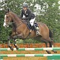

|
Coumme ch'est la mode d'aller à ch'va J'pensi que j'f'thais d'man tchian, Y'en avait iun la s'maine passée Àvendre-e à l'encan. J'm'en fut pour vaie chutte noblye bête Dêterminé d'l'acatter Espéthant que J'pouorrais l'câchi Et qu'i n éthait pas d'feu. Quand j'le vis mâté la chutte pouorre bête, J'eu si grand pitchi d'li j'vouli li faithe la fête, I' semblait saver au j'avais ergret De l'vaie si minséthablye, Et d'plîaisi i'hinnait. Je n'hésiti pas quand l'temps vins, J'mins sus le ch'va le préunmi, Et l'encanteur r'gardi deman bord auvec un p'tit souosrit S'ou l'voulez pour aller à ch'va N'vos gênez pas i' me dit Janmais ou n'tcherrez d'sus sans dos Chounna j'vos garantis. Tout l'monde rathaissez être amusées, Et me je n'fut qu'trop prêt D'en payi trente chelins. Le t'nant à londgeu d'bras par san crin J'm'en fut à pid siez nous Tout fyi de man bardgin. J'soummes dev'nus bouan anmins les deux Depis que je l'acatti Mais j'n'ai pas accou monté d'sus Faudrait on appréchi I's mâte sus ses deux pids d'driethe Sa coue va coumme un moulin Ses ièrs pétillent et i' coudpise Aussitôt qu'i m'ouait v'nin. Ah chutte vielle quedolle Qu'il est têtu Coumme un vièr sou-ou-dard J'ai des bliessieuses partout. Chut vièr carcan faut qu'j'ai l'aud'sus li Et j'montrai sus san dos quand j'dev'thait en mouothi.
|
 |
 |  |
Viyiz étout: